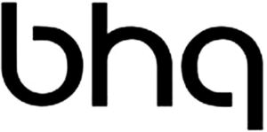

Trade Mark Journal No.2025/040 3 October 2025
WO0000001862004 (35,41,43,44)
Office of origin: Liechtenstein
Date of International Registration:18 February 2025
Date of designation in the UK:
18 February 2025

International priority date claimed: 22 August 2024
(Liechtenstein)
(20549)
- Class 35
- Retail services relating to bags, sports bags, handbags, purses, rucksacks, clothing, footwear, headwear, articles of clothing for sports or leisure, tennis clothing, swimming costumes, swimming trunks, toys, games and playthings, tennis rackets, tennis balls, squash balls, shuttlecocks, swimming equipment, toiletries, body cleaning and beauty care preparations, soaps and gels, moisturizers, perfumes, cosmetics, skin creams, hair care products, shampoos, body hygiene products, deodorants for personal use, talcum powders, pre-shave, after-shave, suntanning and sun screening preparations, vitamins and vitamin preparations.
- Class 41
- Sports and fitness services; health club services; leisure services; fitness club services; sports training and teaching academies; gymnasium services; gymnasium services relating to weight training; sports training; education and instruction services; health and wellness training; provision of training and education relating to gym use, weight training, body building, aerobics, indoor cycling, physical exercise, physical rehabilitation, diet, nutrition; instructional services relating to gym use, weight training, body building, aerobics, indoor cycling, physical exercise, physical rehabilitation; instructional services relating to diet, nutrition, health and beauty; personal training services; medical education services; swimming instruction; information and advisory services relating to the aforesaid services.
- Class 43
- Provision of food and drink; cafe, bar and restaurant services; catering; rental of meeting rooms; accommodation; hotel services; information and advisory services relating to the aforesaid services.
- Class 44
- Human healthcare services; medical services; medical care; medical consultation; human hygiene and beauty care; hygienic and beauty care services; hairdressing; beauty salons; public bath services for hygiene purposes; massage; spa services; sauna services; physical therapy; physiotherapy services; information and advisory services relating to the aforesaid services.
FFE Ventures Establishment
Representative: Swisspat Riederer Hasler Patentanwälte AG, Kappelestrasse 17, FL-9492 Eschen, LIECHTENSTEIN